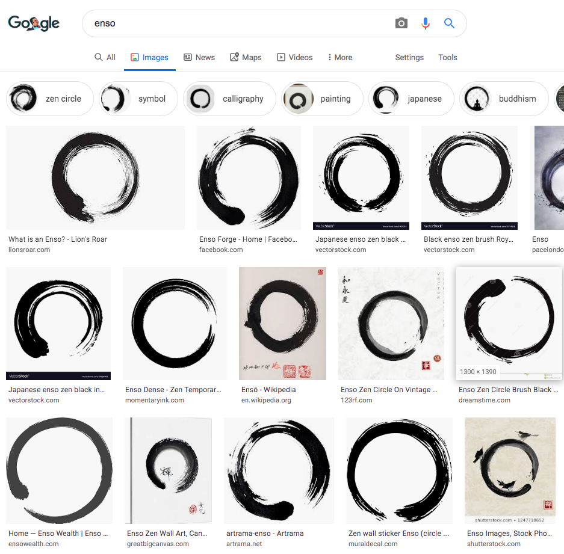

Chapter 8
I came up with a good negative definition: Mediocrity is not being a completist about anything. Finishing for the sake of finishing is not your thing.
Life is too short to finish everything you start. You're probably not going to "finish" life itself. I like the ensō to symbolize this ethos. You draw a circle with a single brush stroke, with no corrections or do-overs, and it doesn't really matter if you complete the circle. You can make another ensō if you like, or just go have a beer instead. Very wabi-sabi. An effort that embraces its own irreversibility, mortality and temporality.
A Google image search for "enso" generates a nice museum of mediocre circles.

Looking back, most things I've done have been ensō-like, but I've only recently become strongly conscious of the fact. For example, I've been experimenting with short, unedited, single-take podcasts on my breaking smart email list. Initially I thought I was just taking the lazy way out, but now I think of them as oral ensōs 😇. It is my most mediocre publishing experiment yet. I hope to have this ethos percolate more through all my efforts.
In the popular imagination, mediocrity is generally associated with a lack of attention to key details, but this idea turns out to be wrong when you poke a little. You wouldn't survive long -- and mediocritization is about solving for survival first -- if you didn't take care of key details. The trick is to mainly care about the key details and being willing to compromise on all other details. This is why non-completionism is such a good test of a mediocrity ethos. If you quit before taking care of certain details, and they end up not really mattering, the finish may look sloppy, but it gets the job done. In fact, the result is often elegant-sloppy, with a characteristic rough-edged flourish to the execution, like an ensō.
But to perfectionists it may look like you are either something of a quitter, or someone with a history of just barely getting past the finish line before moving on, despite showing signs of being able to do better. Someone who habitually leaves a lot of room for improvement behind on the table.
It looks like you're deliberately solving for the passing grade rather than the perfect score, leaving many details unaddressed, and loose threads dangling.
Not quite.
What you're doing is quitting at the point of diminishing marginal returns rather than the formal endpoint. The leftover details left don't matter to you, even if they matter others, so where you leave off actually reveals what you care about (and who you care about). It's your indifference threshold. It's not that you never solve for the A+. It's just that you only solve for the A+ when you have a reason to care for it.
This is often rational. As the programmers' saying goes, "the first 90 percent of the code accounts for the first 90 percent of the development time. The remaining 10 percent of the code accounts for the other 90 percent of the development time." If that last 10% does not actually matter to you, you can save half the effort by quitting early.
That's why bureaucracies are a great example of mediocrity in action. They typically have enough monopolistic power over their own activities that they don't have to care about, or listen to, the complaints of others. They don't want to completely solve your problem to your satisfaction. They just want to get you out of their hair: solve their problem to their satisfaction and get back to their coffee break.
This doesn't mean though, that mediocrity as an ethos is incompatible with caring and loving attention to details beyond the bare minimum. It just makes it a matter of choice rather than necessity. A mediocratist -- someone who consciously chooses a mediocre path -- is not the same thing as a mediocrity -- someone who is incapable of choosing anything else. As the image above shows, ensōs can be very beautiful. Especially after you do a hundred of them rather than adding the 100th refinement to your first one.
There's an obvious rhyming here to the well-known parable of the pottery class and the quantity-over-quality learning approach, but that's not quite the point here. You're not solving for the "best" pot in a clever way or even really trying to learn; you just have lower minimum standards for pots. You're not iterating towards perfection. You're just living life, making serviceable pots. You'll appreciate the occasional nicer pot, and gradual improvement in the lowest-quality pot, but you won't consciously strive for either because all your pots are good enough for you. You're not going to stack rank them and throw away the bottom 10%. If they meet your absolute pot standards (like not leaking and not having cracks perhaps), they pass.
For the mediocratist, the level of caring is a design variable, not a fixed performance parameter to be set at "maximum" by default. That's actually a sign of nihilism: if you care about everything, you care about nothing. Where you stop refining depends on where you stop caring, not a ceremonial idea of a finish line made up by somebody you don't care for, and whose power to punish you is not sufficient to coerce you to finish "better" by their standards.
Or to put it another way, where you decide to stop caring about what you're doing reveals where you are willing to start caring about yourself. And being a completist about everything means not caring about yourself at all.